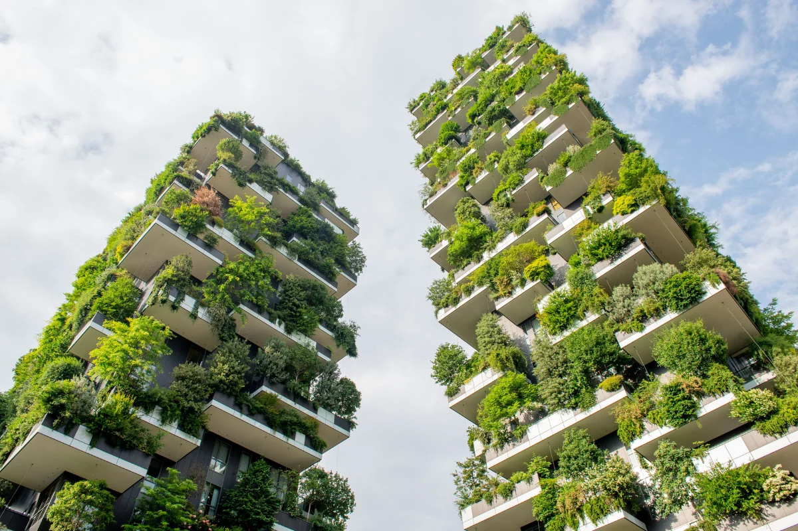

O nas
Skyfarms to innowacyjna firma zajmująca się produkcją oraz projektowaniem farm wertykalnych, które umożliwiają uprawę roślin w sposób efektywny i zrównoważony. Nasza firma powstała z pasji do rolnictwa nowoczesnego, opartego na zaawansowanych technologiach, które pozwalają nam wykorzystać przestrzeń w pionie, zamiast w poziomie.
W naszych farmach wertykalnych stosujemy najnowocześniejsze rozwiązania, takie jak inteligentne systemy sterowania oświetleniem, optymalizację nawadniania, oraz recyrkulację wody i nawozów. Dzięki temu możemy osiągnąć wyższą wydajność upraw, ograniczyć zużycie wody oraz minimalizować wpływ na środowisko.
Nasze farmy wertykalne mogą być z powodzeniem wykorzystywane w różnych środowiskach, od miejskich dachów i wolnostojących budynków po obszary wiejskie. Zapewniamy kompleksowe wsparcie w projektowaniu, instalacji i utrzymaniu naszych farm, dostosowując się do indywidualnych potrzeb i wymagań naszych klientów.

Skyfarms to firma, która kładzie ogromny nacisk na satysfakcję i lojalność klientów. Jesteśmy przekonani, że zadowoleni klienci to kluczowy element naszego sukcesu i dlatego stale dążymy do budowania trwałych relacji opartych na zaufaniu, profesjonalizmie i wysokiej jakości świadczonych usług.
Jednym z naszych głównych priorytetów jest zapewnienie naszym klientom kompleksowego wsparcia na każdym etapie współpracy. Od pierwszego kontaktu z nami, poprzez proces projektowania, produkcji, instalacji aż po serwis posprzedażowy, staramy się zrozumieć indywidualne potrzeby i oczekiwania naszych klientów, oraz dostosować nasze usługi, aby spełnić ich oczekiwania.
Nasza firma stawia na transparentność i uczciwość w relacjach z klientami. Dbamy o to, aby nasi klienci byli informowani o postępach w realizacji projektu, mogli śledzić etapy produkcji i instalacji, oraz mieli możliwość udziału w procesie decyzyjnym. Nasz zespół zawsze jest gotowy odpowiedzieć na pytania, rozwiać wątpliwości i zapewnić niezbędne wsparcie.
Doceniamy również opinie i sugestie naszych klientów, które traktujemy jako cenne źródło informacji na temat jakości naszych usług i możliwości ich doskonalenia. Dzięki temu możemy ciągle podnosić jakość świadczonych usług i dostosowywać się do zmieniających się potrzeb i oczekiwań rynku.